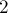

MAXimal
добавлено: 10 Jun 2008 18:06
редактировано: 23 Mar 2012 3:45
Содержание [скрыть]
Длинная арифметика
Длинная арифметика — это набор программных средств (структуры данных и алгоритмы), которые позволяют работать с числами гораздо больших величин, чем это позволяют стандартные типы данных.
Виды целочисленной длинной арифметики
Вообще говоря, даже только в олимпиадных задачах набор средств достаточно велик, поэтому произведём классификацию различных видов длинной арифметики.
Классическая длинная арифметика
Основная идея заключается в том, что число хранится в виде массива его цифр.
Цифры могут использоваться из той или иной системы счисления, обычно применяются десятичная система счисления и её степени (десять тысяч, миллиард), либо двоичная система счисления.
Операции над числами в этом виде длинной арифметики производятся с помощью "школьных" алгоритмов сложения, вычитания, умножения, деления столбиком. Впрочем, к ним также применимы алгоритмы быстрого умножения: Быстрое преобразование Фурье и Алгоритм Карацубы.
Здесь описана работа только с неотрицательными длинными числами. Для поддержки отрицательных чисел необходимо ввести и поддерживать дополнительный флаг "отрицательности" числа, либо же работать в дополняющих кодах.
Структура данных
Хранить длинные числа будем в виде вектора чисел  , где каждый элемент — это одна цифра числа.
, где каждый элемент — это одна цифра числа.
typedef vector<int> lnum;
Для повышения эффективности будем работать в системе по основанию миллиард, т.е. каждый элемент вектора содержит не одну, а сразу  цифр:
цифр:
const int base = 1000*1000*1000;
Цифры будут храниться в векторе в таком порядке, что сначала идут наименее значимые цифры (т.е. единицы, десятки, сотни, и т.д.).
Кроме того, все операции будут реализованы таким образом, что после выполнения любой из них лидирующие нули (т.е. лишние нули в начале числа) отсутствуют (разумеется, в предположении, что перед каждой операцией лидирующие нули также отсутствуют). Следует отметить, что в представленной реализации для числа ноль корректно поддерживаются сразу два представления: пустой вектор цифр, и вектор цифр, содержащий единственный элемент — ноль.
Вывод
Самое простое — это вывод длинного числа.
Сначала мы просто выводим самый последний элемент вектора (или , если вектор пустой), а затем выводим все оставшиеся элементы вектора, дополняя их нулями до символов:
printf ("%d", a.empty() ? 0 : a.back()); for (int i=(int)a.size()-2; i>=0; --i) printf ("%09d", a[i]);
(здесь небольшой тонкий момент: нужно не забыть записать приведение типа , поскольку в противном случае число будут беззнаковым, и если , то при вычитании произойдёт переполнение)
Чтение
Считываем строку в , и затем преобразовываем её в вектор:
for (int i=(int)s.length(); i>0; i-=9) if (i < 9) a.push_back (atoi (s.substr (0, i).c_str())); else a.push_back (atoi (s.substr (i-9, 9).c_str()));
Если использовать вместо массив 'ов, то код получится ещё компактнее:
for (int i=(int)strlen(s); i>0; i-=9) { s[i] = 0; a.push_back (atoi (i>=9 ? s+i-9 : s)); }
Если во входном числе уже могут быть лидирующие нули, то их после чтения можно удалить таким образом:
while (a.size() > 1 && a.back() == 0) a.pop_back();
Сложение
Прибавляет к числу  число
число  и сохраняет результат в :
и сохраняет результат в :
int carry = 0; for (size_t i=0; i<max(a.size(),b.size()) || carry; ++i) { if (i == a.size()) a.push_back (0); a[i] += carry + (i < b.size() ? b[i] : 0); carry = a[i] >= base; if (carry) a[i] -= base; }
Вычитание
Отнимает от числа число () и сохраняет результат в :
int carry = 0; for (size_t i=0; i<b.size() || carry; ++i) { a[i] -= carry + (i < b.size() ? b[i] : 0); carry = a[i] < 0; if (carry) a[i] += base; } while (a.size() > 1 && a.back() == 0) a.pop_back();
Здесь мы после выполнения вычитания удаляем лидирующие нули, чтобы поддерживать предикат о том, что таковые отсутствуют.
Умножение длинного на короткое
Умножает длинное на короткое () и сохраняет результат в :
int carry = 0; for (size_t i=0; i<a.size() || carry; ++i) { if (i == a.size()) a.push_back (0); long long cur = carry + a[i] * 1ll * b; a[i] = int (cur % base); carry = int (cur / base); } while (a.size() > 1 && a.back() == 0) a.pop_back();
Здесь мы после выполнения деления удаляем лидирующие нули, чтобы поддерживать предикат о том, что таковые отсутствуют.
(Примечание: способ дополнительной оптимизации. Если скорость работы чрезвычайно важна, то можно попробовать заменить два деления одним: посчитать только целую часть от деления (в коде это переменная  ), а затем уже посчитать по ней остаток от деления (с помощью одной операции умножения). Как правило, этот приём позволяет ускорить код, хотя и не очень значительно.)
), а затем уже посчитать по ней остаток от деления (с помощью одной операции умножения). Как правило, этот приём позволяет ускорить код, хотя и не очень значительно.)
Умножение двух длинных чисел
Умножает на и результат сохраняет в  :
:
lnum c (a.size()+b.size()); for (size_t i=0; i<a.size(); ++i) for (int j=0, carry=0; j<(int)b.size() || carry; ++j) { long long cur = c[i+j] + a[i] * 1ll * (j < (int)b.size() ? b[j] : 0) + carry; c[i+j] = int (cur % base); carry = int (cur / base); } while (c.size() > 1 && c.back() == 0) c.pop_back();
Деление длинного на короткое
Делит длинное на короткое (), частное сохраняет в , остаток в :
int carry = 0; for (int i=(int)a.size()-1; i>=0; --i) { long long cur = a[i] + carry * 1ll * base; a[i] = int (cur / b); carry = int (cur % b); } while (a.size() > 1 && a.back() == 0) a.pop_back();
Длинная арифметика в факторизованном виде
Здесь идея заключается в том, чтобы хранить не само число, а его факторизацию, т.е. степени каждого входящего в него простого.
Этот метод также весьма прост для реализации, и в нём очень легко производить операции умножения и деления, однако невозможно произвести сложение или вычитание. С другой стороны, этот метод значительно экономит память в сравнении с "классическим" подходом, и позволяет производить умножение и деление значительно (асимптотически) быстрее.
Этот метод часто применяется, когда необходимо производить деление по непростому модулю: тогда достаточно хранить число в виде степеней по простым делителям этого модуля, и ещё одного числа — остатка по этому же модулю.
Длинная арифметика по системе простых модулей (Китайская теорема или схема Гарнера)
Суть в том, что выбирается некоторая система модулей (обычно небольших, помещающихся в стандартные типы данных), и число хранится в виде вектора из остатков от его деления на каждый из этих модулей.
Как утверждает Китайская теорема об остатках, этого достаточно, чтобы однозначно хранить любое число в диапазоне от 0 до произведения этих модулей минус один. При этом имеется Алгоритм Гарнера, который позволяет произвести это восстановление из модульного вида в обычную, "классическую", форму числа.
Таким образом, этот метод позволяет экономить память по сравнению с "классической" длинной арифметикой (хотя в некоторых случаях не столь радикально, как метод факторизации). Крому того, в модульном виде можно очень быстро производить сложения, вычитания и умножения, — все за асимптотически однаковое время, пропорциональное количеству модулей системы.
Однако всё это даётся ценой весьма трудоёмкого перевода числа из этого модульного вида в обычный вид, для чего, помимо немалых временных затрат, потребуется также реализация "классической" длинной арифметики с умножением.
Помимо этого, производить деление чисел в таком представлении по системе простых модулей не представляется возможным.
Виды дробной длинной арифметики
Операции над дробными числами встречаются в олимпиадных задачах гораздо реже, и работать с огромными дробными числами значительно сложнее, поэтому в олимпиадах встречается только специфическое подмножество дробной длинной арифметики.
Длинная арифметика в несократимых дробях
Число представляется в виде несократимой дроби  , где и — целые числа. Тогда все операции над дробными числами нетрудно свести к операциям над числителями и знаменателями этих дробей.
, где и — целые числа. Тогда все операции над дробными числами нетрудно свести к операциям над числителями и знаменателями этих дробей.
Обычно при этом для хранения числителя и знаменателя приходится также использовать длинную арифметику, но, впрочем, самый простой её вид — "классическая" длинная арифметика, хотя иногда оказывается достаточно встроенного 64-битного числового типа.
Выделение позиции плавающей точки в отдельный тип
Иногда в задаче требуется производить расчёты с очень большими либо очень маленькими числами, но при этом не допускать их переполнения. Встроенный -байтовый тип , как известно, допускает значения экспоненты в диапазоне , чего иногда может оказаться недостаточно.
Приём, собственно, очень простой — вводится ещё одна целочисленная переменная, отвечающая за экспоненту, а после выполнения каждой операции дробное число "нормализуется", т.е. возвращается в отрезок , путём увеличения или уменьшения экспоненты.
При перемножении или делении двух таких чисел надо соответственно сложить либо вычесть их экспоненты. При сложении или вычитании перед выполнением этой операции числа следует привести к одной экспоненте, для чего одно из них домножается на  в степени разности экспонент.
в степени разности экспонент.
Наконец, понятно, что не обязательно выбирать в качестве основания экспоненты. Исходя из устройства встроенных типов с плавающей точкой, самым выгодным представляется класть основание равным .